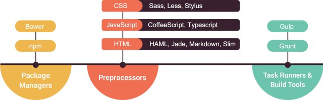
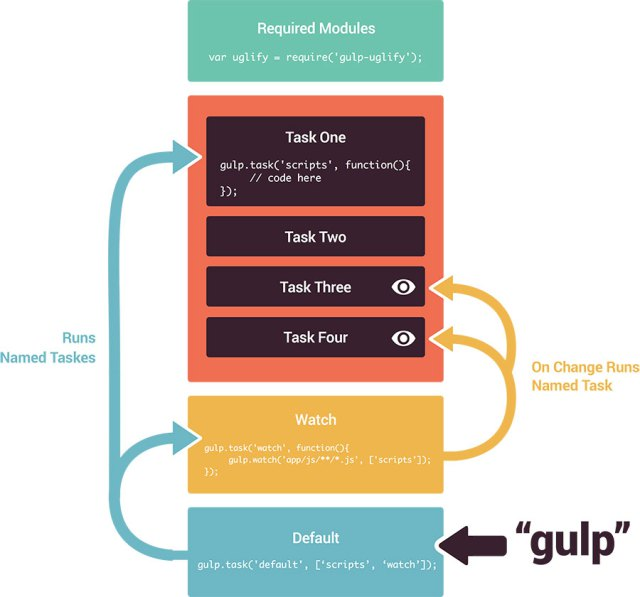

Your browser doesn't support the features required by impress.js, so you
are presented with a simplified version of this presentation.
For the best experience please use the latest Chrome, Safari, or Firefox 10.
De l'utilité d'un build system
- Un ensemble de tâches (task runners)
- automatise des opérations répétitives
- fonctionne en tandem avec un gestionnaire de paquets

Les concepts de gulp
- Basé sur du code plutôt que de la configuration
- Programmation impérative plutôt que déclarative
- Représenté comme une fabrique / chaîne de montage
- Traitements des fichiers à la chaîne
L'ADN de gulp
- npm pour l'installation des dépendances
- vinyl et adapter vinyl-fs pour l'accès aux fichiers
- orchestrator pour l'orchestration des tâches
- une CLI pour le lancement des tâches
Les éléments constitutifs de gulp
- le fichier package.json
- le fichier gulpfile.js
- contient des tâches (task)
- qui utilisent le streaming system
L'installation des dépendances avec npm
- npm init
- npm i -D maDependance
Anatomie d'un fichier gulpfile


La dépendance entre les tâches
- Attention liste non ordonnée, exécution en parallèle possible donc non prédictible
gulp.task('hello', function () {
console.log("Hello, ");
});
gulp.task('world', function () {
console.log("world!");
});
gulp.task('default', ['hello', 'world']);
La streaming system
- API basée sur le pattern method chaining
- lecture de fichiers en entrée avec les glob patterns : gulp.src
- succession de traitements sur le flux avec des plugins : gulp.pipe
- production de fichier en sortie : gulp.dest
- traintement des erreurs : gulp.on('error', fn)
Les plugins
Unité de traitement minimaliste destinée à répondre à un besoin précis : ex: minification d'un fichier
Listes de plugins
- http://blog.nodejitsu.com/npmawesome-9-gulp-plugins/
- http://ipestov.com/essential-plugins-for-gulp/
Perspectives
- Gulp V4 : https://github.com/gulpjs/gulp/blob/4.0/CHANGELOG.md
- Broccoli ?